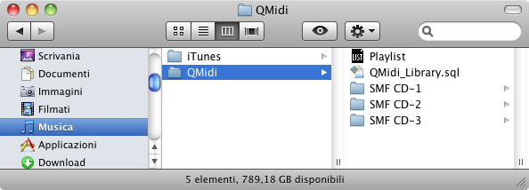

If you plan to use QMidi's library or playlist documents to organize your media files, you should follows some rules to avoid "missing file" errors when transferring your stuff to another computer or disk. Because library and playlists contain "aliases" to the media, it is very important to keep the relative position between media files and library/playlists during copy/move operation.
The recommended procedure to create a playlist is:
The library database is saved in the "(Home)/Music/QMidi" directory and must remain there so that QMidi can access it. Therefore this location can be used as root folder, allowing you to move it safely from one account (computer) to another.

The library can of course also point to files located in other places (like the iTunes folder or the Movies folder): It is not necessary to move them inside QMidi's folder. The important thing to keep in mind is that you'll have to transfer all the things without changing the relative positions of the various elements. If all your media files are located in your home folder, you can safely use the Apple's Migration Assistant to transfer your data from one computer to another.
As explained in the "Media Location" chapter, you can safely add iTunes media to your playlist/library. However, the iTunes "Keep Media folder organized" feature may cause some problems:
When you modify either the artist, album or track/disc tags, iTunes will move/rename the media file alone, leaving the QMidi linked files at their original place/name. QMidi makes its best to notify the user of such situation, but it would be a good idea to disable this feature.
You can import iTunes playlists or selections by dragging them to the sidebar of the library window.
If you followed the "Media Location" rules explained before, your files hierarchy should be like this:

Before moving/copying the root "QMidi" folder you should refresh any playlist it contain: This is done by holding down the option key while opening the playlist(s). This action is similar to the iTunes "Consolidate Library" feature.
After that it will be ok to move the entire "QMidi" folder on another computer/disk without loosing the playlist relative references. At last, you should refresh the copied playlists.
NB: Because QMidi saves sync information in the text file resource fork, you can store them only on HFS (Mac) formatted volumes.
Same logic used here: Before and after a transfer operation you should refresh the library's references: this is done by holding down the option key while starting up QMidi.
Because QMidi's library's location is hard coded, it is not easy to share one library between different accounts of your computer.
There is however a workaround (for advanced users):
As said before, if your library refers to media files outside the shared QMidi's library folder, you must maintain relative positions during transfer on another computer. Good luck!